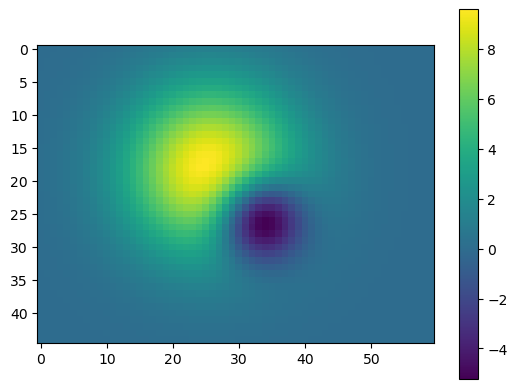
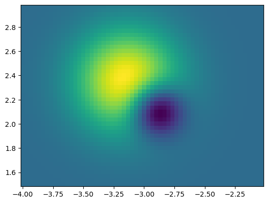

Python libraries for raster data#
This notebook based on content from previous geohackweek raster tutorials geohackweek/raster
Overview#
teaching: 15 minutes
exercises: 0
questions:
What python libraries can I use to work with raster data?
objectives:
Understand the relationship between numpy, rasterio, and GDAL
Table of contents#
NumPy#
A simple raster is a 2-dimensional array of values. A multi-band raster (e.g., RGB image) can be represented as a 3-dimensional array (three 2D arrays with identical dimensions). Either way, we are working with rectangular arrays (matrices) of pixel values, which in the Python programming language are usually represented by NumPy arrays.
For this tutorial, we’ll perform basic operations with NumPy arrays extracted from geospatial rasters. For more information about multidimensional array analysis, take a look at the geohackweek tutorial on N-Dimensional Arrays.
# Create raster data
import numpy as np
#Number of rows and columns
nx = 60
ny = 45
x = np.linspace(-4.0, 4.0, nx)
y = np.linspace(-3.0, 3.0, ny)
X, Y = np.meshgrid(x, y)
Z1 = np.exp(-2 * np.log(2) * ((X - 0.5) ** 2 + (Y - 0.5) ** 2) / 1 ** 2)
Z2 = np.exp(-3 * np.log(2) * ((X + 0.5) ** 2 + (Y + 0.5) ** 2) / 2.5 ** 2)
Z = 10.0 * (Z2 - Z1)
print(type(Z))
Z
<class 'numpy.ndarray'>
array([[0.02122529, 0.02892972, 0.03895127, ..., 0.00325789, 0.00221092,
0.00148217],
[0.02646584, 0.0360725 , 0.04856839, ..., 0.00406227, 0.0027568 ,
0.00184812],
[0.03259447, 0.04442573, 0.05981526, ..., 0.00500296, 0.00339519,
0.00227609],
...,
[0.00530875, 0.00723575, 0.00974228, ..., 0.00081484, 0.00055298,
0.00037071],
[0.00393665, 0.00536559, 0.00722429, ..., 0.00060424, 0.00041006,
0.0002749 ],
[0.00288328, 0.00392987, 0.00529121, ..., 0.00044256, 0.00030034,
0.00020134]], shape=(45, 60))
# Numpy arrays permit all kinds of operations on our raster data, some of the most common are:
# indexing
print('value at Z[25,20]: ', Z[25,20])
value at Z[25,20]: 6.060251397244279
# slicing
print('first row, last 3 values: ', Z[0,-3:])
first row, last 3 values: [0.00325789 0.00221092 0.00148217]
# math
print('mean of all values: ', np.std(Z))
mean of all values: 2.3411455044612444
import matplotlib.pyplot as plt
%matplotlib inline
# Visualize with matplotlib
plt.imshow(Z, origin='upper', interpolation='none')
plt.colorbar();

Rasterio#
An excellent python library supported by Mapbox is rasterio. Rasterio provides a “Pythonic” interface to GDAL and supports most of the features and formats that GDAL supports. Both GDAL and rasterio are constantly being updated and improved. Rasterio uses numpy arrays to represent raster data. It also uses the PROJ library and GDAL to manage geospatial operations.
Pay attention to compatible versions#
As of writing this tutorial (September 2019), GDAL is at version 3.0.1 and rasterio is at version 1.0.26.
rasterio 1.xrequiresGDAL <3andPROJ<6.
In the example below use rasterio to assign a CRS and geotransform to the data we just created. The coordinate reference system will be ‘+proj=latlong’, which describes an equirectangular coordinate reference system with units of decimal degrees. The affine transformation matrix can be computed from the matrix product of a translation and a scaling:
# Create Affine geotransformation
from rasterio.transform import Affine
res = (x[-1] - x[0]) / 240.0
ulx = x[0] - res / 2
uly = y[-1] - res / 2
transform = Affine.translation(ulx, uly) * Affine.scale(res, -res)
transform
Affine(np.float64(0.03333333333333333), np.float64(0.0), np.float64(-4.016666666666667),
np.float64(0.0), np.float64(-0.03333333333333333), np.float64(2.9833333333333334))
# Save as a Geotiff
import rasterio
with rasterio.open('example.tif', 'w',
driver='GTiff',
height=Z.shape[0],
width=Z.shape[1],
count=1,
dtype=Z.dtype,
crs='+proj=latlong', # this is a "proj4" string defining the projection
transform=transform,
) as dst:
dst.write(Z, 1)
!ls -lh
'ls' is not recognized as an internal or external command,
operable program or batch file.
# Load the file into memory and plot
import rasterio.plot
with rasterio.open('example.tif') as src:
print(src.profile)
rasterio.plot.show(src)
{'driver': 'GTiff', 'dtype': 'float64', 'nodata': None, 'width': 60, 'height': 45, 'count': 1, 'crs': CRS.from_wkt('GEOGCS["WGS 84",DATUM["WGS_1984",SPHEROID["WGS 84",6378137,298.257223563,AUTHORITY["EPSG","7030"]],AUTHORITY["EPSG","6326"]],PRIMEM["Greenwich",0,AUTHORITY["EPSG","8901"]],UNIT["degree",0.0174532925199433,AUTHORITY["EPSG","9122"]],AXIS["Latitude",NORTH],AXIS["Longitude",EAST],AUTHORITY["EPSG","4326"]]'), 'transform': Affine(0.03333333333333333, 0.0, -4.016666666666667,
0.0, -0.03333333333333333, 2.9833333333333334), 'blockxsize': 60, 'blockysize': 17, 'tiled': False, 'interleave': 'band'}

Image and world coordinates#
We now have the same array but with georeferenced coordinates. We often know the georeferenced coordinates of a position of interest, but not the image (row,col) of that position in a raster rasterio helps us manage our two sets of ‘image’ and ‘world’ coordinates:
# Note that with rasterio if we read the data into memory, we get our numpy array back
with rasterio.open('example.tif') as src:
data = src.read()
# But rasterio appends an additional dimension corresponding to the raster band
print(type(data))
print(data)
print(data.shape)
<class 'numpy.ndarray'>
[[[0.02122529 0.02892972 0.03895127 ... 0.00325789 0.00221092 0.00148217]
[0.02646584 0.0360725 0.04856839 ... 0.00406227 0.0027568 0.00184812]
[0.03259447 0.04442573 0.05981526 ... 0.00500296 0.00339519 0.00227609]
...
[0.00530875 0.00723575 0.00974228 ... 0.00081484 0.00055298 0.00037071]
[0.00393665 0.00536559 0.00722429 ... 0.00060424 0.00041006 0.0002749 ]
[0.00288328 0.00392987 0.00529121 ... 0.00044256 0.00030034 0.00020134]]]
(1, 45, 60)
lon, lat = -3.33, 2.13
with rasterio.open('example.tif') as src:
row, col = src.index(lon, lat) # spatial --> image coordinates
val = src.read(1)[row,col] # band 1, value at row,col
print('(Lon,Lat), (Row,Col), Value: ', (lon,lat), (row,col), val)
(Lon,Lat), (Row,Col), Value: (-3.33, 2.13) (25, 20) 6.060251397244279
Other libraries#
This just scratches the surface of GDAL, NumPy and Rasterio, but hopefully demonstrates the relationship between these foundational libraries. Many other libraries exist in the fields of raster geoprocessing (which would include hydrological routing and other routines needed for Earth Systems Sciences) and digital signal processing (including image classification, pattern recognition, and feature extraction).
key points#
Rasterio is built around the GDAL library to facilitate raster operations in Python
Pixel values of rasters can be extracted to a numpy array for computation with Python